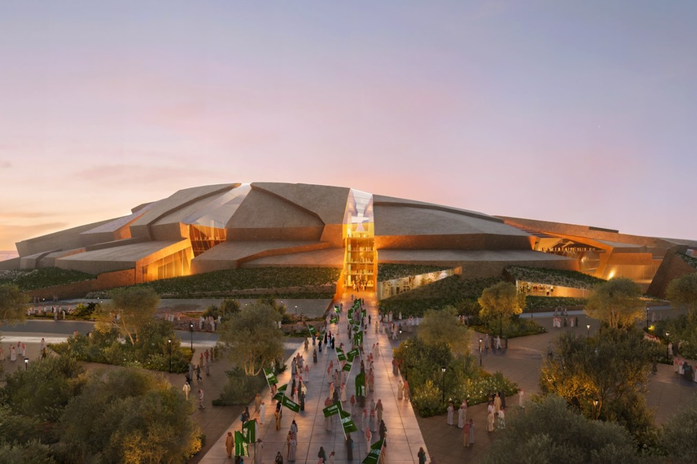
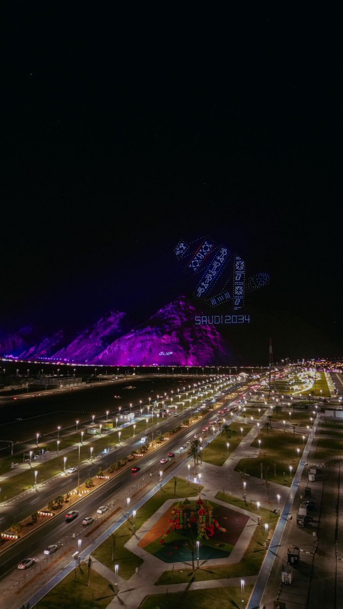
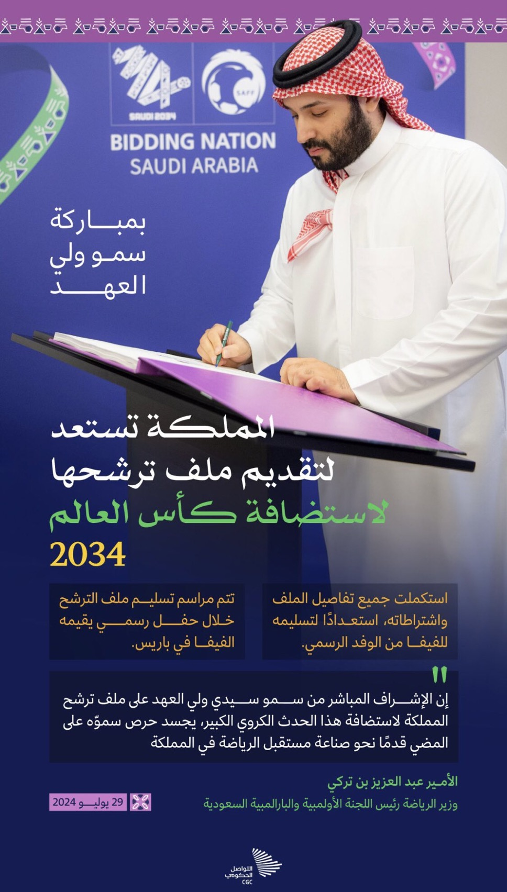

The World Cup 2034 is set to be an exciting global event hosted in Saudi Arabia, bringing together nations to compete at the highest level of football. This tournament will focus on unity, sportsmanship, and the celebration of cultures through the beautiful game.
Importance of Hosting the World Cup
Hosting the World Cup is a significant opportunity to enhance Saudi Arabia's position on the international stage. The tournament will attract attention from all over the world, contributing to the country's image as a global destination. Additionally, the event supports tourism, as fans from various countries are expected to flock to the nation, thereby boosting the local economy.

Infrastructure
Saudi Arabia is working on developing a comprehensive infrastructure to host the tournament. This
includes the construction of new stadiums and the renovation of existing ones, as well as improvements
to transportation and logistics. The plans also involve creating hotels and recreational facilities to
accommodate visitors.

Economic Impact of Hosting the World Cup
Job Creation: Hosting the World Cup will provide job opportunities in sectors such
as construction, tourism, and transportation.
Revenue Increase: Revenues generated from tourism and economic activities are
expected to exceed billions of dollars.
Economic Growth: Investment in infrastructure and related projects will contribute
to the country's economic growth.
Investment Attraction: It will attract both local and foreign investments across
various sectors.
Tourism Boost: Increase in international visitors, significantly enhancing the
tourism sector.
Social and Cultural Interaction
Enhancement of National Pride: The tournament will foster a sense of pride in the
local culture and identity.
Sense of Belonging: It will strengthen community ties and a shared sense of
belonging among citizens.
Cultural Exchange: People will have the opportunity to interact with fans from
diverse cultures, promoting cultural exchange.
Understanding and Communication: The event will facilitate dialogue and
understanding among different nations and communities.
Promotion of Diversity: It will highlight the importance of diversity and
inclusivity in society.

Sports Technology
Enhancing Fan Experience: Technology will play a crucial role in improving the
overall experience for fans attending the tournament.
Logistical Facilitation: It will streamline logistical operations, making event
management more efficient.
Mobile Applications: Smartphone apps can provide real-time updates and information
to fans, enhancing their experience.
Safety and Security: Advanced technologies will be utilized to improve safety and
security measures during the event.
Data Analytics: Data analytics can be employed to monitor crowd behavior and
optimize resource allocation.